Table of Contents
0. Trip Overview & Route at a Glance
Fly into Las Vegas (LAS) — it's ~2h45m to Zion, versus ~4-5 hours if you fly into Salt Lake City instead. Rent a car at the airport (this route is not realistically doable without one). The loop below is Las Vegas → Zion (2 nights) → Bryce Canyon (1 night) → back to Las Vegas, roughly 460 total driving miles over 4 days — plenty of park time, no exhausting all-day drives.
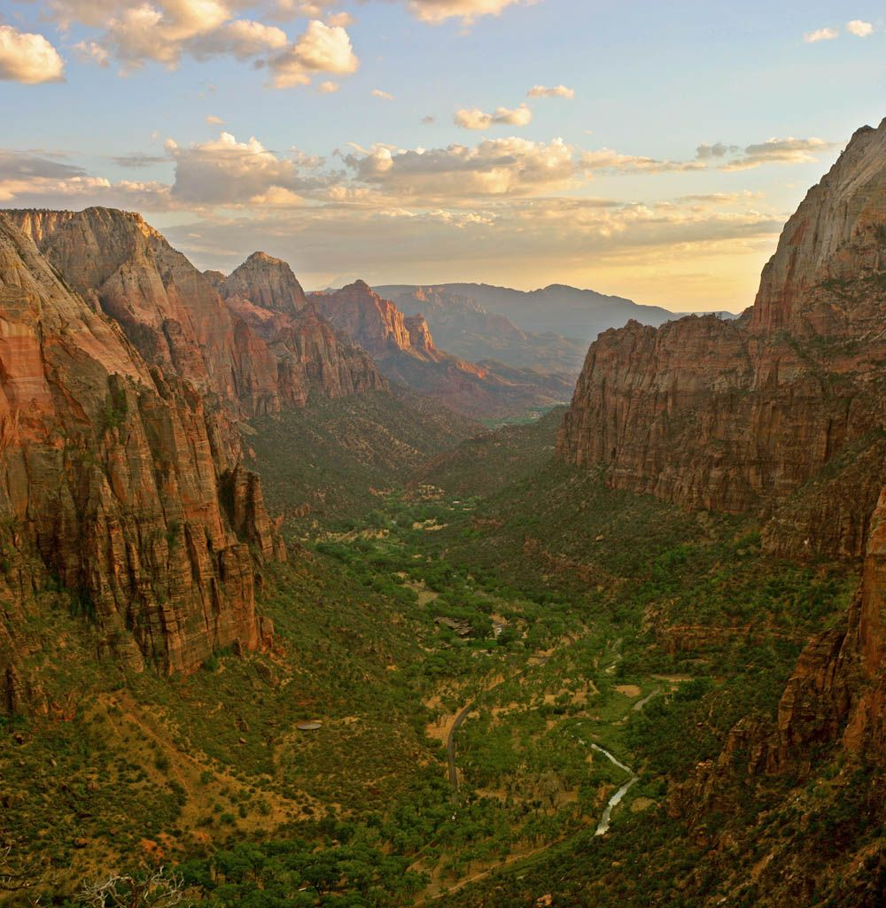
Day 1 Las Vegas (LAS) --2h45m--> Zion National Park (Springdale)
Zion Canyon Scenic Drive, Riverside Walk, Emerald Pools [overnight: Springdale]
Day 2 Zion National Park — full day
Sunrise hike (Angels Landing or Observation Point/West Rim)
Afternoon: Kolob Canyons or Narrows wade (weather permitting) [overnight: Springdale]
Day 3 Zion --1h45m--> Bryce Canyon (via Zion-Mt Carmel Tunnel + Scenic Hwy 12)
Stop: Red Canyon | Afternoon/sunset: Sunset Point, Bryce Point, Inspiration Point
[overnight: Bryce Canyon City]
Day 4 Sunrise at Sunrise Point -> 18-mile park scenic drive to Rainbow Point
Navajo Loop + Queen's Garden combo hike (or Mossy Cave if trails are icy)
Kodachrome Basin State Park (optional, 30 min away)
Bryce --4h15m--> Las Vegas (LAS) for evening/next-morning flightWhy this route and not all 5 parks: Arches, Canyonlands and Capitol Reef sit 3-5 hours further east near Moab — genuinely a separate trip. Trying to add them turns this into a windshield tour with no time to actually hike. Zion + Bryce + Highway 12 alone deliver the two most photographed landscapes in Utah at an unhurried pace. See §9 if you have a 5th day to spare for Capitol Reef.
1. Day 1 — Fly In & Zion Canyon
Land at Las Vegas, pick up your rental car, and head northeast on I-15 into Utah. The landscape turns from desert scrub to red sandstone right around the Utah border — a preview of what's coming. Stop in Springdale, the small town right at Zion's south entrance, to check into your hotel and grab lunch before heading into the park.
From April through October, private cars are banned from Zion Canyon Drive — you ride the free, frequent park shuttle from the Visitor Center. Ride it end to end once to get oriented, then hop off at:
- Zion Human History Museum — quick overview and the best first views of the canyon walls.
- Riverside Walk (from the Temple of Sinawava, last shuttle stop) — an easy, paved 2.2-mile round trip along the Virgin River; this is also where The Narrows hike begins if you want to wade in (see §5 for April water-temperature cautions).
- Emerald Pools (Zion Lodge stop) — a family-friendly 1.2-3 mile network of trails to waterfalls and pools beneath the cliffs; do this if you skip the deeper Narrows wade.
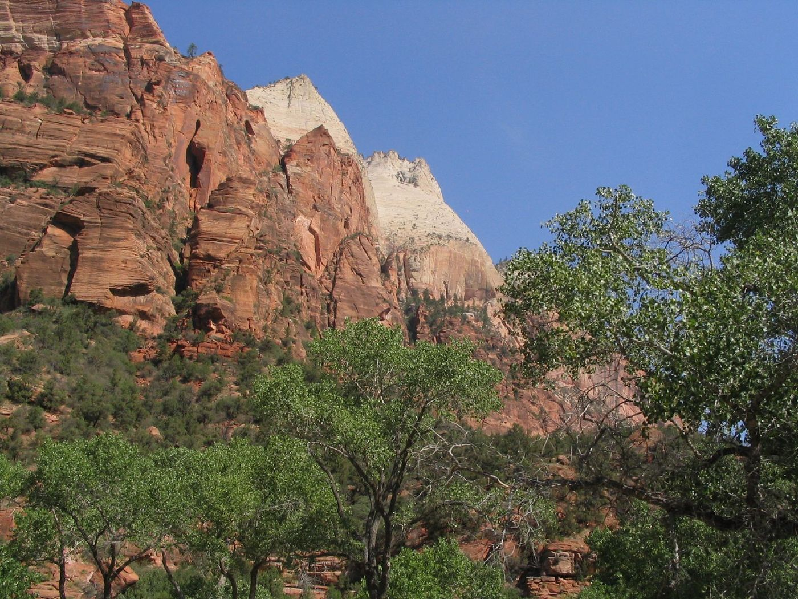
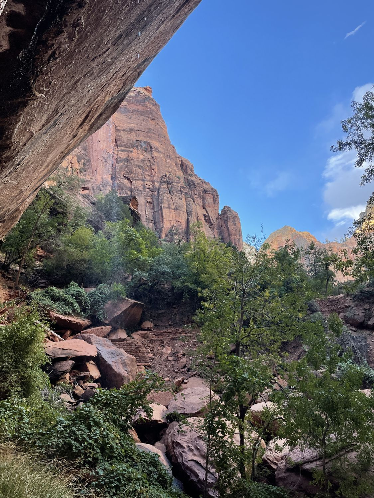
Don't miss: sunset from the Canyon Junction bridge or the pullout near the Zion Human History Museum — the west-facing canyon walls turn deep orange-red in the last hour of light, and it's a 5-minute stroll from the shuttle, not a hike.
2. Day 2 — Zion's Best Hikes
Zion's signature hike: switchbacks up "Walter's Wiggles," then a final half-mile along a narrow spine with chain handholds and 1,000-ft drop-offs on both sides to a summit overlooking the whole canyon. Requires an advance permit via a lottery — see §6, this needs to be sorted weeks before you fly out, not on arrival. Start at or before sunrise both to beat the heat and because permit time-slots are assigned.
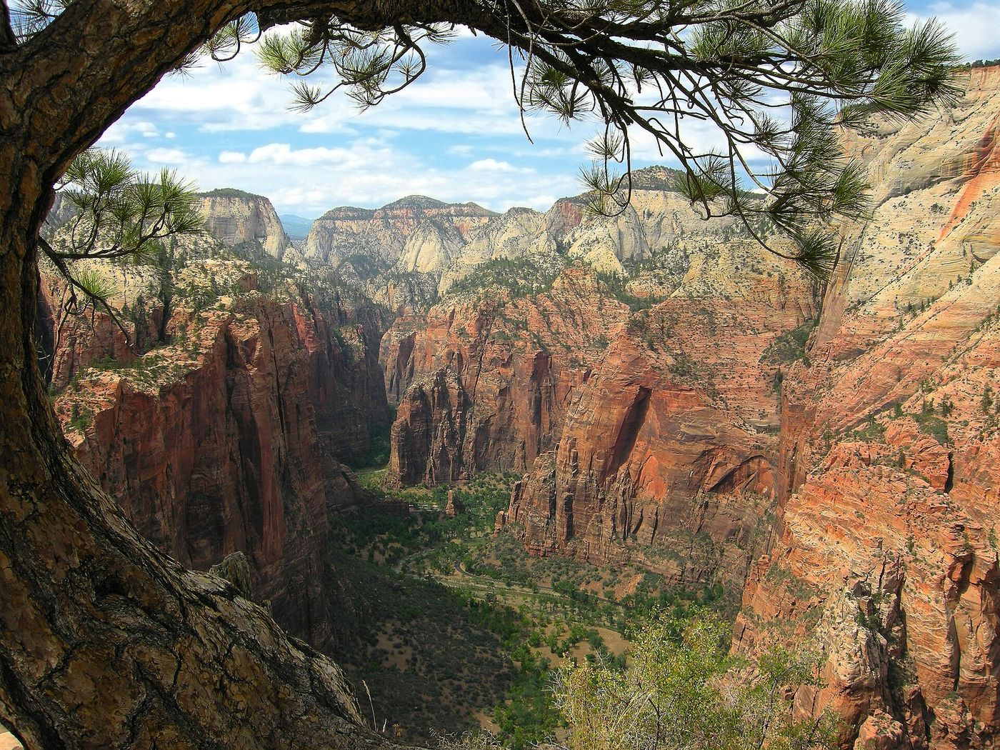
No permit needed, and arguably a better view than Angels Landing — you look straight down the length of the canyon, with Angels Landing itself visible far below as a small ridge. The East Mesa approach is flat and easy compared to the older, storm-damaged canyon-floor route. Best pick if you didn't win the Angels Landing lottery.
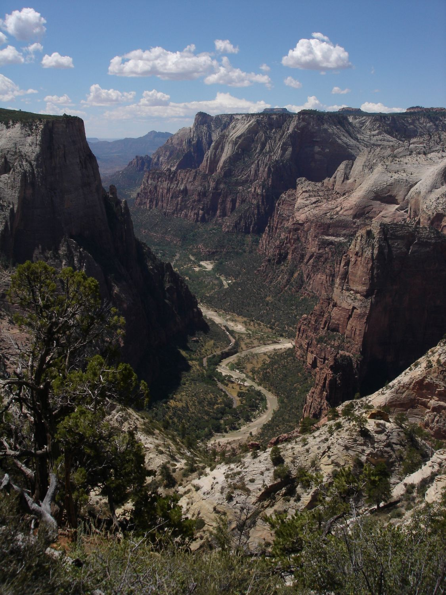
Kolob Canyons is a separate, much quieter entrance off I-15 about 40 minutes from Springdale — a 5-mile scenic drive to a viewpoint over the Finger Canyons, with almost none of Zion Canyon's crowds. Good low-effort way to see a completely different part of the park. Alternatively, if you skipped it Day 1 and conditions allow (see §5), spend the afternoon wading upstream into The Narrows from Riverside Walk — even the first mile, wading in the Virgin River between thousand-foot walls, is unlike anything else in the park.
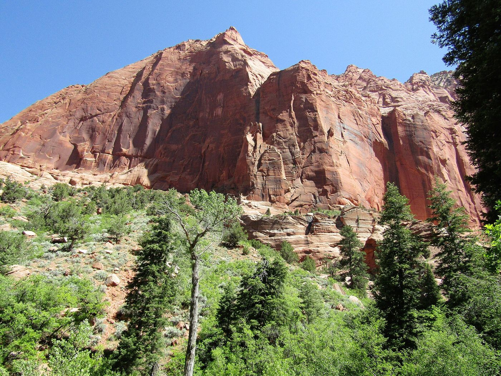
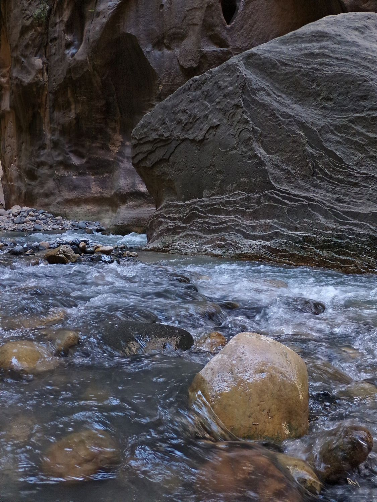
Caution: both Angels Landing and Observation Point involve real exposure to heights and, in April, possible ice on the shaded upper switchbacks — check current trail conditions at the Visitor Center before starting either one, and turn back if the surface is icy rather than pushing on.
3. Day 3 — Highway 12 to Bryce Canyon
Leave Springdale eastbound on Route 9 and you're immediately climbing a series of switchbacks to the 1.1-mile Zion-Mount Carmel Tunnel, blasted through solid rock in 1930, with windows carved into the cliff face. Oversized vehicles (RVs, trucks with campers) need a traffic-control escort through the tunnel — check the size restriction before you go if you rented anything larger than a standard car/SUV. This short stretch is one of the most dramatic short drives in the National Park System on its own.
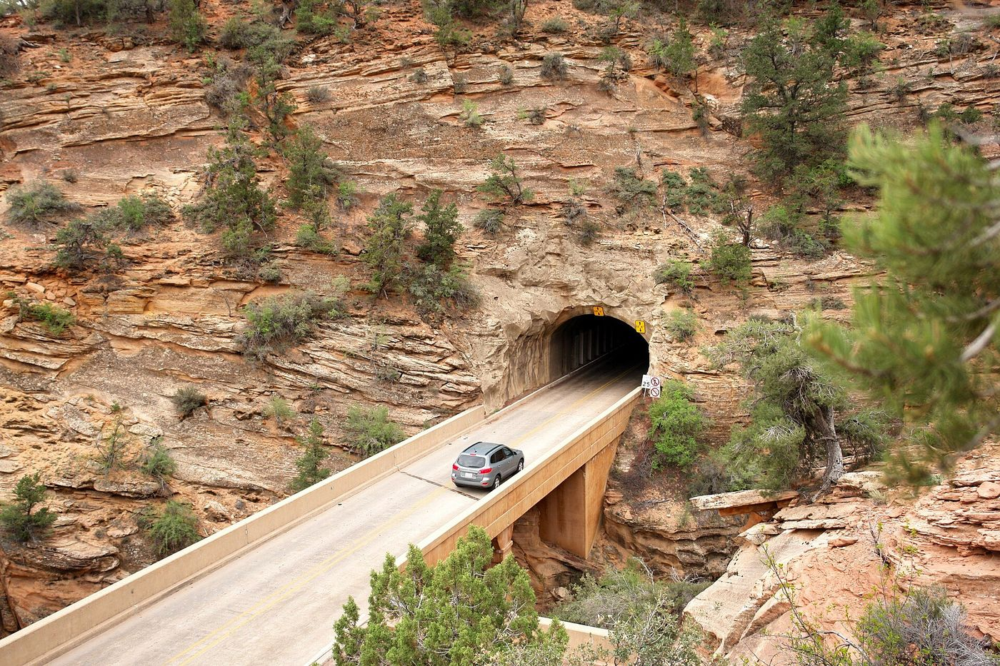
From the park's east entrance, join US-89 north, then turn onto Utah Scenic Byway 12 — officially an "All-American Road," one of only a few dozen in the country. Stop at Red Canyon (part of Dixie National Forest, right where Highway 12 begins) — smaller-scale but just as vividly red as Bryce itself, with an easy paved bike/walking path directly beside the parking area. It's a perfect stretching-your-legs stop and often much less crowded.
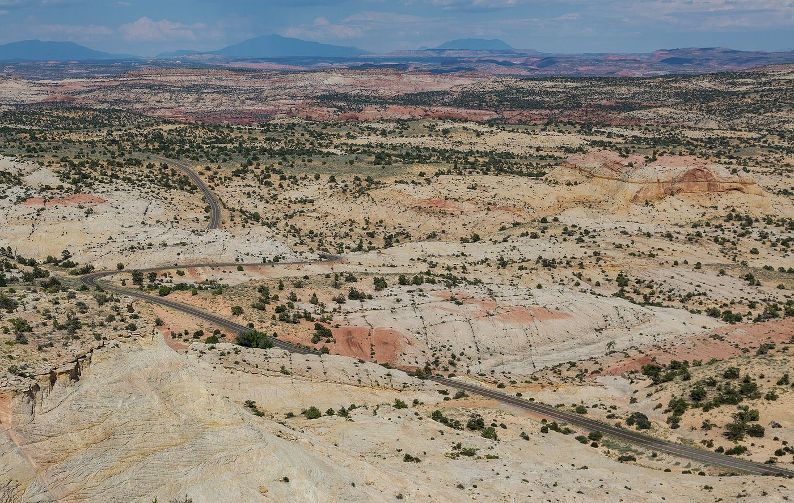
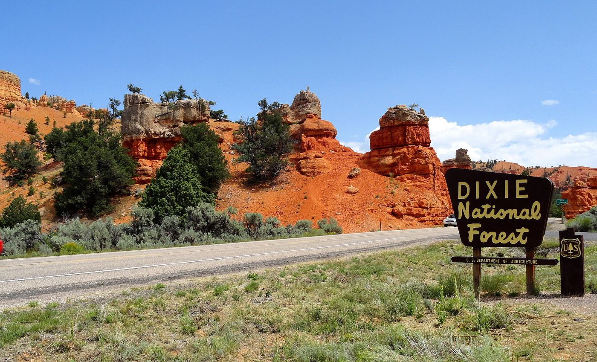
Check into your Bryce-area hotel, then head straight to the park's main amphitheater viewpoints, all connected by an easy paved Rim Trail: Sunrise Point, Sunset Point, Inspiration Point, and Bryce Point (the widest panorama of the whole amphitheater of hoodoos). Time your visit to Bryce Point or Inspiration Point for sunset — the orange spires light up dramatically as the sun drops, and this is a short walk from parking, not a hike.
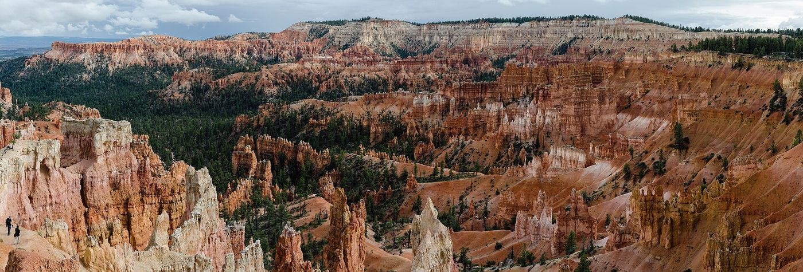
Bonus, if time allows: Bryce Canyon sits at ~8,000-9,000 ft elevation, and on a clear April night it's one of the darkest, best stargazing spots in the country — the park regularly hosts astronomy programs. If skies are clear, step back outside after dinner before turning in.
4. Day 4 — Sunrise at Bryce, Kodachrome Basin & Departure
Bryce Canyon's hoodoos are genuinely best at sunrise — the low-angle light rakes across the amphitheater and makes the orange spires glow from the east. Sunrise Point is a two-minute walk from its own parking lot, so this costs you almost no extra effort for one of the best views of the whole trip.
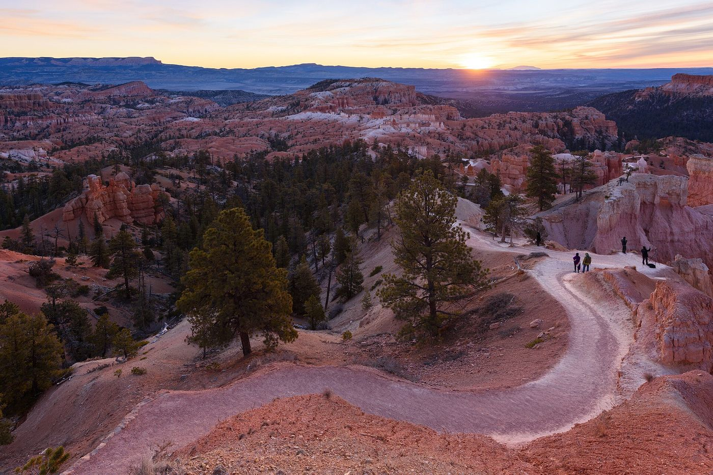
The park's classic "combination trail" descends into the amphitheater itself, threading between hoodoos rather than just looking at them from the rim — including Wall Street, a narrow slot with switchbacks between towering rock walls. April caution: the Navajo Loop's Wall Street side is often closed into spring due to ice/rockfall risk from snowmelt — check at the Visitor Center; if closed, do the gentler Queen's Garden trail alone (also from Sunrise Point) or the easy, flat Mossy Cave Trail (a short walk to a small waterfall and hoodoos, on Highway 12 just outside the main park entrance) instead.
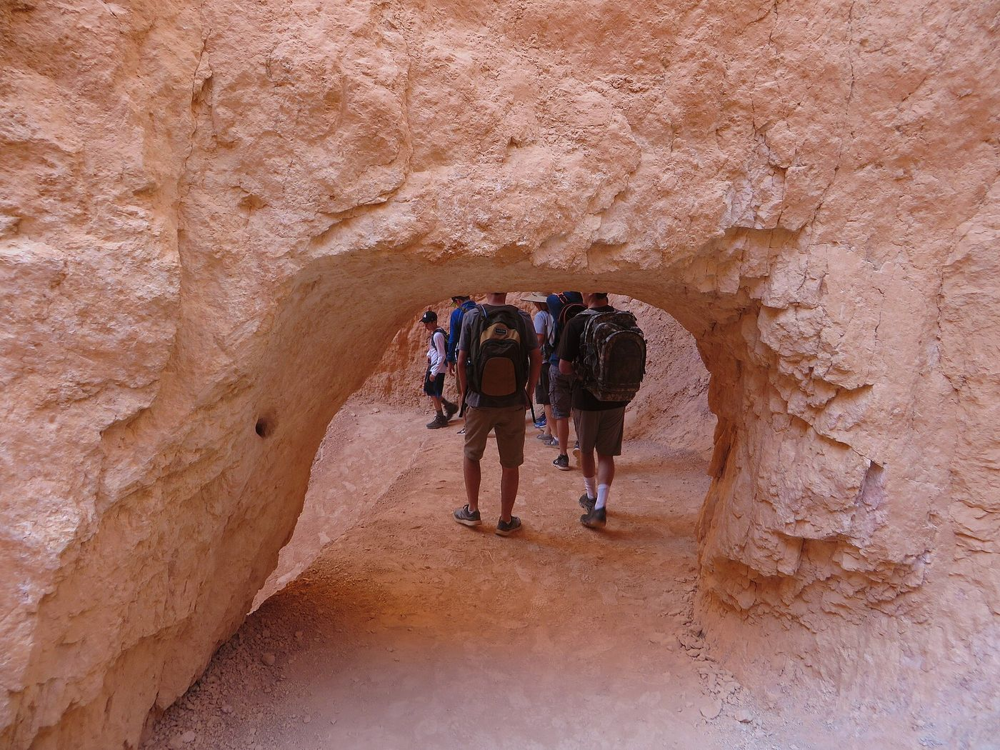
Bryce Canyon's main park road runs 18 miles one-way past a string of viewpoints (Fairview Point, Natural Bridge, Agua Canyon, Ponderosa Point) to Rainbow Point/Yovimpa Point at the road's end — at over 9,100 ft, this is the highest point in the park, with a genuinely different, forested, high-elevation view south across the Grand Staircase toward Arizona. Each pullout is a 2-minute walk from the car, so you can do the whole drive and hit every viewpoint in under two hours.
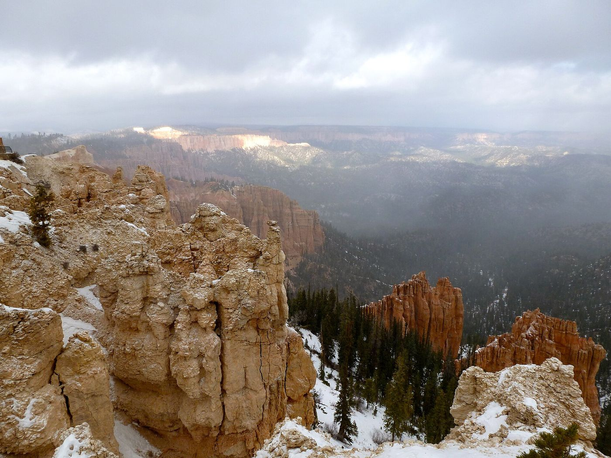
Optional detour — Kodachrome Basin State Park (~30 min from Bryce)
A different, less-visited landscape: dozens of tall sandstone "sand pipe" spires rising from the desert floor. The Panorama Trail loop (3 miles) or the short Grand Parade / Shakespeare Arch spur trails give you the highlights in under an hour and this park is almost never crowded, even in peak season.
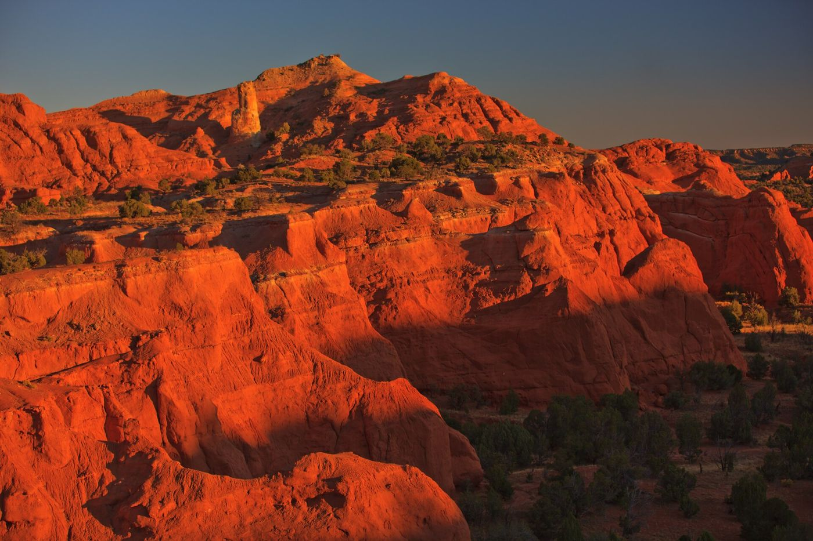
Afternoon — drive back to Las Vegas (~4h15m). Build in a buffer for a fuel/food stop in Hurricane or St. George, UT along the way, and target arriving with at least 2 hours before your flight for rental-car return and TSA at LAS.
5. April in Utah — Weather, Crowds & Packing List
| Location | Elevation | Typical April high | Typical April low | Notes |
|---|---|---|---|---|
| Zion Canyon (Springdale) | ~4,000 ft | ~70°F | ~40°F | Warm, pleasant days; can still see a passing snow flurry early in the month |
| Bryce Canyon | ~8,000-9,100 ft | ~50°F | ~20-25°F | Genuinely cold, especially at sunrise; some shaded trail ice is common |
| Las Vegas | ~2,000 ft | ~80°F | ~55°F | Already warm — a jacket needed only in the evening |
Cautions specific to April:
- The Narrows — the Virgin River is often running high and cold from snowmelt in April; water can be waist-deep or higher and near-freezing. Only wade in if a local outfitter's current conditions report calls it passable, and rent a drysuit locally rather than going in regular clothes.
- Bryce trail closures — the lower loop trails (Navajo Loop's Wall Street side especially) close intermittently through spring for ice and rockfall; always check the visitor center board same-day rather than trusting an old trip report.
- Temperature swings — a 40-50°F swing between a Bryce sunrise and a Zion afternoon on the same trip is normal; dress in layers you can shed, not one outfit for the whole day.
Why April is still a great choice overall: crowds and lodging prices are meaningfully lower than the May-September peak, wildflowers start blooming at Zion's lower elevations, daytime temperatures in Zion are close to ideal for hiking, and the Zion Canyon shuttle runs on a lighter schedule with shorter lines than summer.
Packing list:
- Layers: t-shirt + fleece/insulated jacket + a shell for wind, plus a warm hat and gloves for Bryce sunrise
- Sturdy hiking boots with real traction (for both loose sand and possible icy patches)
- Reusable water bottles (2L+ per person per hiking day) and sun protection — April sun at elevation is stronger than it feels
- A physical or downloaded offline trail map — cell service is unreliable inside both parks
- A headlamp if attempting either sunrise hike in the dark
6. Permits, Reservations & Booking Timeline
| What | How far ahead | Notes |
|---|---|---|
| Angels Landing permit | Seasonal lottery ~2 months out, plus a day-before lottery | Required for anyone hiking past Scout Lookout; entirely separate from park entry |
| Zion & Bryce lodging | 2-4 months out | Springdale and the Bryce Canyon area have limited rooms; April is shoulder season but still books up around spring break weeks |
| Zion National Park entry pass / America the Beautiful annual pass | Buy online or at the gate | The annual pass ($80) pays for itself covering both parks' entry fees on one trip |
| Rental car | As early as possible | Las Vegas rental rates and availability tighten up around holiday weekends |
| Narrows drysuit/gear rental (Springdale outfitters) | Reserve a day or two ahead | Only needed if attempting the wade; check current river conditions first |
7. Where to Stay Each Night
| Night | Base town | Why here |
|---|---|---|
| Night 1 & 2 | Springdale, UT | Sits directly at Zion's south/pedestrian entrance — walk or hop the free town shuttle straight into the park, no driving needed once you've checked in |
| Night 3 | Bryce Canyon City / Tropic, UT | A few minutes from the park entrance; Tropic is a slightly cheaper, quieter alternative with the same drive time |
| Night 4 | Las Vegas (or fly out same evening) | Depending on flight time — an evening flight avoids paying for a 4th hotel night entirely |
8. Driving Distances & Times
| Leg | Distance | Drive time |
|---|---|---|
| Las Vegas (LAS) → Springdale / Zion | ~165 mi | ~2h45m |
| Springdale → Kolob Canyons viewpoint | ~40 mi | ~45 min |
| Zion (east entrance) → Bryce Canyon (via Hwy 89 + Scenic Byway 12) | ~72 mi | ~1h45m |
| Bryce Canyon → Kodachrome Basin State Park | ~24 mi | ~35 min |
| Bryce Canyon → Las Vegas (LAS) | ~260 mi | ~4h15m |
| Total trip driving | ~460-500 mi | ~9-10 hrs over 4 days |
9. Bonus: If You Have One More Day
Add a 5th day and continue east on Scenic Byway 12 (~2h15m from Bryce) to Capitol Reef National Park — dramatically less crowded than Zion or Bryce, with the historic Fruita orchard district, the easy Hickman Bridge natural-arch hike, and Capitol Gorge's ancient petroglyph panel. This turns the loop into a one-way drive ending near Torrey, UT, roughly 3.5 hours from Salt Lake City for your return flight instead of backtracking to Las Vegas — worth it only if your itinerary allows an open-jaw flight (fly into LAS, home from SLC).
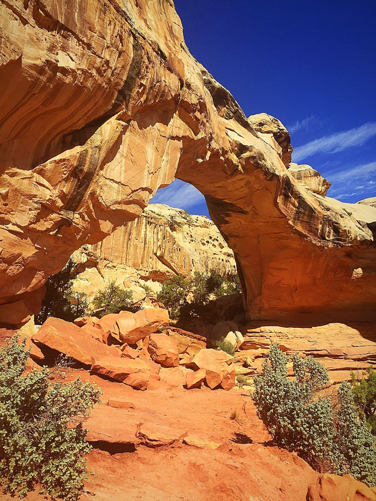
If you'd rather stay closer to Las Vegas, a lower-effort 5th-day add-on is the Grand Canyon's North Rim (seasonal — typically closed until mid-May, so check status before planning) or a half-day at Valley of Fire State Park, only 50 minutes from Las Vegas itself and open year-round — genuinely striking red-sandstone scenery if you land with time before your flight home rather than after it.
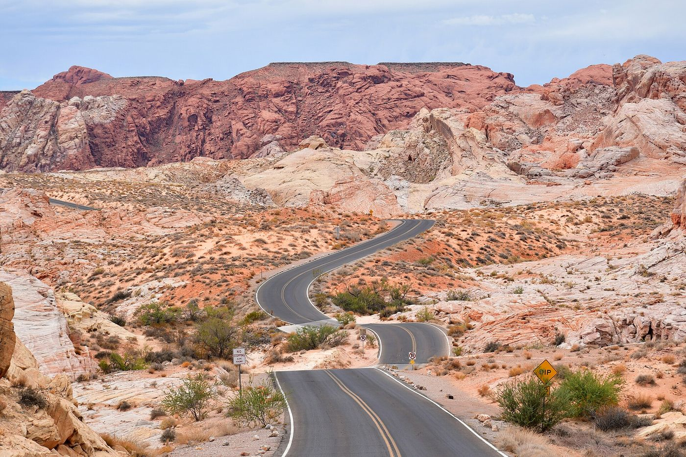
10. Key Takeaways
- Fly into Las Vegas, not Salt Lake City — it cuts roughly 2 hours off your first driving day and gets you into Zion the same afternoon you land.
- Two full days in Zion is the right ratio against one day in Bryce — Zion's canyon-floor hikes take longer and the park is simply bigger; Bryce's highlights are more concentrated around one amphitheater.
- Book the Angels Landing lottery and your Springdale/Bryce lodging weeks ahead — these are the two pieces of this trip that can't be improvised on arrival.
- April means real cold at Bryce's elevation and real cold water in the Narrows — pack for both extremes and check trail/river conditions same-day rather than assuming based on Zion's warmer valley floor.
- The Highway 12 drive between the parks is a destination in itself, not just a transit day — build in time for Red Canyon and don't treat it as a driving obligation to rush through.
Photo Credits
All photos are from Wikimedia Commons, reused under the licenses noted. Images were resized and recompressed for the web; no other changes were made.
- Zion Canyon from Angels Landing — Diliff (CC BY-SA 3.0)
- Zion Canyon Scenic Drive — Ken Lund (CC BY-SA 2.0)
- Emerald Pools Trail — Vulturesong (CC0 / public domain)
- Angels Landing summit view — Tobias Alt (CC BY-SA 4.0)
- Observation Point — Oliver Löffler (public domain)
- Kolob Canyons — Ben P L (CC BY-SA 2.0)
- The Narrows — Trougnouf (Benoit Brummer) (CC BY 4.0)
- Zion-Mount Carmel Tunnel — Alex Proimos (CC BY 2.0)
- Scenic Byway 12 — Tony Webster (CC BY-SA 2.0)
- Red Canyon, Dixie National Forest — Fabio Achilli (CC BY 2.0)
- Bryce Canyon amphitheater — Tuxyso (CC BY-SA 3.0)
- Sunrise Point, Bryce Canyon — King of Hearts (CC BY-SA 4.0)
- Navajo Loop Trail — Ken Lund (CC BY-SA 2.0)
- Rainbow Point, Bryce Canyon — Phil Whitehouse (CC BY 2.0)
- Kodachrome Basin State Park — Murray Foubister (CC BY-SA 2.0)
- Hickman Bridge, Capitol Reef — Autumn1198 (CC BY-SA 4.0)
- Valley of Fire State Park — Gzzz (CC BY 4.0)